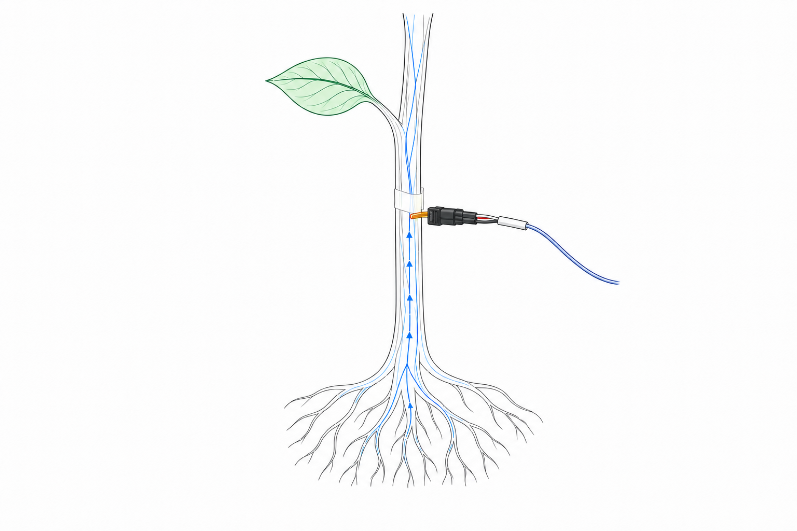
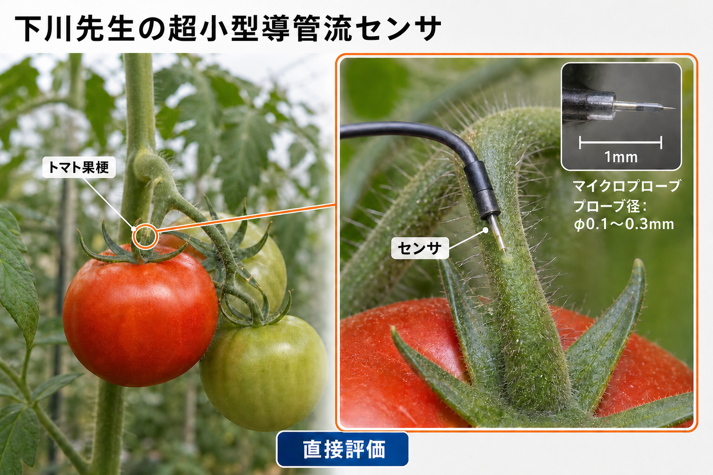

茶
一次データ
水分動態
茎の水の動きを直接捉える
すぐ価値に変わる
防霜の運転判断
水分動態だけで判断を支援
価値を高める
防霜運用を最適化
条件別の精度を高める
香川大学発 植物センシング技術 事業説明
香川大学発のMEMS型維管束センサーで植物の茎の局所樹液流速を直接測定し、灌水・収穫・加温・防霜など栽培現場のタイミング判断につなげる事業を検討している。
技術シーズ
香川大学 イノベーションデザイン研究所 下川房男
計測方式
MEMS型維管束センサー（低侵襲・直接計測）
現在地
産学官コンソーシアムでの複数品目・現場計測実績
01 / エグゼクティブサマリ
香川大学下川房男教授が開発したMEMS型維管束センサーは、植物の茎に刺した1点で局所的な樹液流速を直接測定する。この生データに校正や外部データを重ね、樹液流量・蒸散量・水分収支などの二次データを導き、灌水・収穫・加温・防霜のタイミング判断につなげるという仮説を、PSIステップ2で検証する。
✓確定 直接測定（局所樹液流速）は計測できている。 ≈仮説 二次データ化と用途別の判断情報化は検証前。
産学官コンソーシアム（KADeC）参画機関の圃場で、キク・茶・バレイショ・ミニトマト・ミカンの5品目、23〜92日間の連続計測実績がある。
複数作物の比較、現場での再現性、知財の整理、事業化条件の整理を、0〜18か月の工程で段階的に検証する。
現行・次世代センサーを現場に持ち込み、生データから判断情報の試作までを検証し、次の有償PoC条件を整える。
02 / 顧客課題
栽培現場では、灌水・収穫・加温防霜という3つのタイミング判断を、気象・土壌・外観・経験といった植物の外側の情報で行っている。樹液流速は、これらの判断に植物の内側の情報を重ねられるという仮説を持つ。
| 用途 | 現在の判断材料 | 判断ミスの影響（仮説） | 樹液流速が追加できる情報（仮説） |
|---|---|---|---|
| 灌水 | 気象データ、土壌水分センサー、目視、経験 | 過剰灌水は根腐れ・裂果・尻腐れ等、不足は生育不良や品質低下につながる可能性がある | 茎内の水の動きを直接示す指標として、灌水タイミングの判断を補強できる可能性がある |
| 収穫 | 糖度計測、外観、経過日数、経験 | 収穫時期のずれは品質や歩留まりに影響する可能性がある | 樹液流速の変化パターンが、成熟度を判断する材料になる可能性がある |
| 加温・防霜 | 気温、天気予報、経験 | 判断の遅れは凍霜害に、過剰な加温はコスト増につながる可能性がある | 樹液流速の低下が、凍結リスクの兆候になる可能性がある |
≈仮説：影響と追加情報はいずれも検証前
✓確定産学官コンソーシアム（KADeC）参画機関からも、潅水タイミングの判断や生育障害の原因特定のために、植物体内の水分動態を直接計測したいという意見が寄せられている。
樹液流速は、灌水・収穫・加温防霜のタイミング判断に、植物の内側からの情報を重ねる仮説を持つ。
03 / 技術シーズ
香川大学 イノベーションデザイン研究所 下川房男教授が開発したMEMS型維管束センサーは、植物の茎に微小な針を挿入し、熱の伝わり方から局所的な樹液流速を低侵襲で測定する。
茎に針を刺し、片方から熱を与え、もう片方への伝達速度から流速を測る。針を増やせば逆向きの流れも解析できる。導管は茎の中心にあるとは限らず、適度な深さを探る調整が必要。
従来の樹液流計測は、木部厚やプローブ長などの適用条件があり、細い草本茎や新梢には適用しにくい。下川技術は1〜5mm級の細径茎への適用を狙う。正確な比較条件と優位性はPSIステップ2で検証する。
水分動態・養分動態の基本特許は香川大学単独で権利化済み（日本・アメリカ・オランダ・フランス・ドイツ・オーストラリアの6か国、12件）。周辺特許も国内外で出願中。
低侵襲MEMSで細い茎の局所樹液流速を測ることが、事業のシーズ。
04 / 製品・提供価値
事業の核は、直接測定から現場の判断情報までを一連の商品として設計すること。直接測るのは刺入点における局所的な樹液流速のみで、そこから先の二次データ化・判断情報の生成は検証前の仮説である。
事業モデルは、センサーシステムの販売と、データ解析による栽培支援サービス・コンサルティングを組み合わせる方向で検討している。
直接測定（確定）
刺入点における局所樹液流速
生データ
計測点の時系列シグナル
校正・外部データ
校正パラメータ、気象・灌水・土壌等
二次データ（仮説）
樹液流量・蒸散量・植物全体の水分収支
判断情報（仮説）
灌水・収穫・加温防霜等の判断材料
現場成果（仮説）
現場の栽培判断が変わり、結果として現れる成果
計測機器＋設置・運用＋データ解析＋用途別判断情報を、ひとつの商品単位として仮説化する。
生産者、研究機関等が候補。用途によって異なる可能性があり、確定していない。
利用者と支払者は一致するとは限らない。生産者、JA、研究機関等が候補。
機器販売、月額利用料、圃場・期間単位の利用料、解析サービス料などが候補。単位は確定していない。
継続利用によって判断の精度やデータの蓄積価値が増える、という仮説を持つ。
05 / 技術開発の現在地
研究開発の現在地と、事業化に向けて技術的に詰める項目を分けて示す。
産学官コンソーシアム（KADeC）の参画機関に、センサーと駆動モジュールから成る現場計測システムを9台以上提供し、キク・茶・バレイショ・ミニトマト・ミカンの5品目で23〜92日間の連続計測を実施した。研究用試作ではRaspberry Piベースのデータ収集箱（約25cm）でデータを収集し、リアルタイム可視化と5〜10分ごとのクラウドへの自動アップロードまで確認できている。
現行センサーと次世代樹脂製センサーの数量・成熟度・役割、耐久性、長期安定性、校正手法、現場運用は、いずれも未確定。
樹脂フィルム上にセンシング機能を集積したプロトタイプの実用化を進めている。想定目標価格1万円以下、モジュールサイズ縦100mm×横100mm×厚み50mm、Wi-Fiによるデータ転送とクラウドでの閲覧を目指す。
現行センサー
数量・成熟度・役割は確認中
次世代樹脂製センサー
数量・成熟度・役割は確認中
耐久性
長期安定性
校正手法
現場運用
06 / 初期市場の探索方針
初期の事業仮説は、施設フルーツトマトの灌水最適化による裂果抑制を前面に出す。PSIステップ2では、産学官コンソーシアム（KADeC）ですでに計測実績があるキク・茶・バレイショ・ミニトマト・ミカンの5品目を起点に複数作物・用途を比較し、支払意思の高い用途を選ぶ。
KADeC参画機関での計測では、1日4回の灌水後に流速上昇が観測され、日中と日没後の2つのピークが確認されている。この変化パターンから、灌水最適化による裂果抑制、秀品率・収益向上への応用を検証する。
コンソーシアムで計測実績のある品目。樹液流速と気温等のデータを組み合わせ、防霜運転の判断材料を作れるかを検証したい候補。
キク、バレイショ、ミカンでもコンソーシアムでの連続計測実績があり、比較データとして活用する。
| 評価軸 | 見る内容 |
|---|---|
| 信号品質 | MEMSセンサーで安定した樹液流速信号が得られるか |
| 現場ペイン | 判断の遅れ・過不足が生産者にとってどれだけ大きな損失につながるか |
| 季節性 | 一年のうちいつ検証できるか、単年で判断できるか |
| 実証アクセス | 現場・圃場・協力生産者へのアクセスのしやすさ |
| 比較計測のしやすさ | 既存手法との並行比較のしやすさ |
| 支払意思 | 生産者・研究機関が対価を払う意思があるか |
| 運用負荷 | 設置・校正・保守にかかる手間 |
≈仮説：この7軸で作物を比較する
0〜3か月の技術検証フェーズの終盤に、比較データをもとに主用途を選ぶゲートを置く。
評価ゲートを通過した作物を主用途として深掘りし、それ以外の作物は比較データとして保持する。
複数作物の比較データが、深掘りする主用途を選ぶ。
07 / PSIステップ2検証計画
PSIステップ2の期間を、技術検証からデータ変換検証、顧客価値・事業化条件検証へと段階的に進める工程として提案する。
PSIステップ2 公式条件
分野
アグリ・フードテック
直接経費上限
3,000万円
期間
原則1.5年以内（やむを得ない場合最長2年）
支援期間中の起業
原則として支援終了
08 / オンサイトPoC検証設計
オンサイトPoCは、06の評価ゲートで選ぶ主用途・作物を対象に、計測から運用までを一式として持ち込み、比較計測によって評価指標を確かめる検証として設計する。件数・期間・成功基準は提案または要設計であり、現時点で確定していない。
06の評価ゲートを通過した主用途・作物を対象とする。対象そのものはゲート後に確定する。
樹液流速から導く二次データ・判断情報の試作が、現場の栽培判断に使える情報を追加できる、という仮説を検証する。
→提案
現行センサー
次世代樹脂製センサー
持込候補。完成度は確認中
データロガー
可視化システム
電源
通信
設置治具
校正・比較計測
運用手順
予備品
→提案
→提案
有効データ率
ドリフト
再設置再現性
稼働率
植物への影響
判断までの先行時間
現場有用性
→提案
校正結果
生データ・メタデータ・品質フラグ
作物別二次データ候補
判断情報の試作
次の有償PoC条件
09 / 事業化の出口
PSIステップ2の期間中に設立条件と有償PoC条件を整え、終了後に大学発スタートアップの設立と有償PoCの開始へ進む、ひとつの道筋を描く。
≈仮説
事業計画・資金調達計画の策定は、香川大学側メンバーの山地が担当する。
知財利用条件
事業計画
初期顧客
資金計画
≈仮説
顧客
現場
用途
評価指標
価格帯
開始時期
意思決定者
証拠形式
契約・発注内示・条件付きLOI等
事業化推進機関として、本件のサポートをご検討いただけますと幸いです。
どうぞよろしくお願いいたします。
香川大学 下川プロジェクトメンバー一同
香川大学発 植物センシング技術
植物の内側にある水の動きを直接捉え、茶で早く価値を証明し、トマトで再現性ある判断モデルへ育てる。

01 / 何の技術か

確認済み / 直接測る
局所樹液流速
低侵襲センサーで連続計測
解析 / 推定する
流量・蒸散・水分収支
校正と環境データを組み合わせる
提供価値案 / 判断に変える
防霜・灌水のタイミング
作物別の判断モデルへ翻訳する
02 / 実証テーマ
茶は一次データで防霜へ。トマトは二次データを蓄積して裂果予防へ。
一次データ
水分動態
茎の水の動きを直接捉える
すぐ価値に変わる
防霜の運転判断
水分動態だけで判断を支援
価値を高める
防霜運用を最適化
条件別の精度を高める
一次データ
水分動態
初年度から計測・校正
二次データ
裂果の発生結果
水分動態との関係を蓄積
時間をかけて価値化
裂果を防ぐ灌水判断
二次データが必要なため時間がかかる
03 / ビジネスモデル
→概念図 作物別パイプラインの立ち上がりと、SU設立後の事業成長を示す。
時期・売上規模は事業仮説
04 / 開発計画
≈計画案 ステップ2終了時にSU設立可否を判断し、設立後は開発・顧客検証を経て売上を立ち上げる。
香川大学発 植物センシング技術
細い茎の局所樹液流速を連続計測し、まず施設トマトの灌水最適化と裂果抑制への有用性を検証する。計測実績のある複数作物を比較し、事業価値の高い用途へ展開する。
技術シーズ
香川大学 イノベーションデザイン研究所 下川房男
直接測るもの
刺入点の局所樹液流速
現場実績
5品目・23〜92日の連続計測
01 / エグゼクティブサマリ
香川大学のMEMS型維管束センサーは、細径茎の局所樹液流速を低侵襲で連続計測する。PSIステップ2では、現場で蓄積した複数作物データを起点に、顧客価値・製品仕様・価格・知財利用条件を検証する。
受領資料で確認できた事業化の現在地
現場計測
5品目
23〜92日
実装実績
計測システム
9台以上
初期用途仮説
施設トマトの
灌水最適化
出口仮説
会社設立＋
有償PoC
✓確認済み 局所樹液流速の直接計測 ≈仮説 二次データ化・判断情報化・経済効果
センサー、駆動・通信、可視化、設置運用、データ解析を一体で提供する。
大規模施設トマト事業者。施設園芸システム販売企業との連携も検証する。
顧客・用途・成功指標・価格・知財とデータの利用条件・有償PoCの意思。
植物の水の動きを直接測り、灌水のタイミングと効果を判断できる情報へ変える。
02 / 顧客課題
生産者は気象、土壌、外観、経験を組み合わせて、いつ水をやるか、いつ収穫するか、いつ加温・防霜するかを判断している。植物体内の水の動きが加われば、判断の精度と再現性を高められる可能性がある。
| 判断 | 現場のペイン | 本シーズで検証する価値 |
|---|---|---|
| 灌水 | 過不足の判断が裂果、尻腐れ、生育、品質に影響する | 樹液流速の変化から、給水後の植物反応と次の灌水タイミングを捉えられるか |
| 収穫 | 収穫時期のずれが品質と歩留まりに影響する | 樹液流速の変化パターンを成熟度の補助指標にできるか |
| 加温・防霜 | 判断の遅れは凍霜害、過剰運転はエネルギーコストにつながる | 樹液流速と環境データから運転判断の先行指標を作れるか |
最初に検証する顧客価値は、施設トマトの灌水判断と裂果リスクの低減。
03 / 技術と現場実績
直径約5〜7mmの茎に長さ2〜3mmの微細プローブを設置し、熱の伝わり方から刺入点の流速を測る。KADeC参画機関の圃場では、環境データと合わせた長期計測まで進んでいる。
| 品目 | 栽培環境 | 連続計測期間 | 同時計測 |
|---|---|---|---|
| ミカン | 鉢植・露地 | 46日 | 気温・湿度・日射・水分ポテンシャル等 |
| ミニトマト | 施設 | 92日 | 環境データ・灌水記録 |
| 輪ギク | 施設 | 57日 | 環境データ |
| 茶 | 露地 | 25日・26日 | 環境データ |
| バレイショ | ポット・施設 | 23日 | 環境データ |
ミニトマトで1日4回の灌水後に流速上昇を観測。日中と日没直後の2つのピークも確認した。
センサー、駆動モジュール、表示系を組み合わせた計測システムを9台以上、参画機関へ提供している。
樹脂フィルム型、Wi-Fi・クラウド対応、最終目標価格1万円以下。性能・原価・耐久性はPSIで検証する。
04 / 製品・事業モデル
顧客へ届ける商品はセンサー単体ではない。計測・通信・可視化・設置運用と、用途別の二次データ・判断情報を組み合わせる。
| 項目 | 初期仮説 | PSIで確認すること |
|---|---|---|
| 顧客 | 大規模施設トマト事業者 | 最も大きい損失、決裁者、導入単位 |
| 販売経路 | 直接販売＋施設園芸システム販売企業との連携 | 導入・保守・販売を担うパートナー |
| 収益 | センサーシステム販売＋データ解析・栽培支援サービス | 価格、月額・圃場・期間等の課金単位、粗利 |
| 初期価値 | 灌水最適化による裂果抑制・秀品率向上 | 因果関係と顧客の経済効果 |
| 展開 | 計測実績のある他作物、海外施設園芸、システム連携 | 作物ごとの再現性と販売効率 |
計測機器の売上と、継続するデータサービスの売上を組み合わせる。
05 / 事業化基盤
受領資料には、研究開発から顧客調査・事業計画・資金調達までの役割と、現場実証の連携先が示されている。
農業センシングの確立・普及と付加価値向上を目的とする産学官コンソーシアム。企業参加費は90万円／口。製品価格や支払意思とは分けて扱う。
基本特許は香川大学単独で6か国・12件を権利化済み。周辺特許も国内外で出願中。既存ライセンスと新会社の利用条件を確認する。
小松精機工作所がセンサー製作、香川大学が設計・開発、Happy QualityとKADeC参画企業が実証フィールドを担う現行PoCがある。
| 領域 | メンバー | 受領資料に記載された役割 |
|---|---|---|
| 研究統括 | 下川 | 事業代表、研究開発統括、システム全体設計、事業戦略 |
| 開発・実証 | 丸尾・水野・研究員予定 | 施設園芸実証、環境データ解析、プロトタイプ開発・性能評価 |
| 事業化 | 小松・永冨・橿本・中村・松本 | 事業モデル、知財、市場・顧客調査、マーケティング、ブランディング |
| 事業計画・資金調達 | 山地 正洋 | 事業化計画・資金調達計画の策定 |
06 / PSIステップ2検証計画
PSI資金で計測実績のある複数作物を比較し、施設トマトを中心仮説として深掘りする。信号品質だけでなく、顧客損失・経済効果・支払意思・運用負荷を同じ評価ゲートに置く。
PSIで減らす不確実性は、測れるか、役立つか、払われるか、新会社で提供できるか。
07 / オンサイトPoC
初期評価ゲートで選んだ作物・用途を対象に、計測から現場へのフィードバックまでを一式で検証する。件数・期間・成功基準は対象顧客と設計する。
01 / 持ち込む
現行／次世代樹脂製センサー、データロガー、可視化、電源、通信、設置治具、校正・運用手順、予備品
02 / 比べる
気温、湿度、日射、水分ポテンシャル、土壌水分、灌水・収穫等の作業記録、既存手法、可能な場合は対照区
03 / 返す
生データ、メタデータ、品質フラグ、校正結果、作物別二次データ、用途別判断情報の試作、検証レポート
04 / 決める
有効データ率、安定性、再設置再現性、判断の先行時間、経済効果、支払意思、価格、開始時期、決裁者
樹液流速と灌水・環境データの関係から、灌水判断を支援し、裂果・秀品率・収益への効果を評価する。
茶・輪ギク・バレイショ・ミカンの既存データも活用し、より強いペインと支払意思が見つかった用途を次の候補に残す。
PoCの成果物は計測データだけでなく、顧客が次の有償実証を判断できる証拠。
08 / 事業化の出口
PSI期間中に、会社設立と初期売上の両方につながる条件をそろえる。終了時点の出口仮説は、顧客と実証条件が具体化し、新会社が必要な知財・データ・製造連携を利用できる状態。
| 領域 | PSI終了時にそろえる条件 | 証拠の例 |
|---|---|---|
| 顧客 | 顧客、決裁者、現場、用途、評価指標、価格、開始時期 | 契約、発注意向、条件付きLOI等 |
| 製品 | センサー・モジュール・データサービスの初期仕様と原価 | 基本仕様書、PoC結果、見積 |
| 権利・連携 | 特許ライセンス、データ利用、製造・実証パートナー条件 | 契約方針、合意書、データ取扱条件 |
| 会社 | 事業計画、資金調達計画、設立時の推進体制 | 設立計画、資本政策、資金調達方針 |
会社設立と有償PoCを、同じ顧客証拠と事業条件の上に置く。
事業化推進機関として、本件のサポートをご検討いただけますと幸いです。
どうぞよろしくお願いいたします。
香川大学 下川プロジェクトメンバー一同